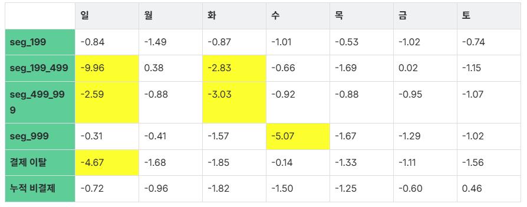
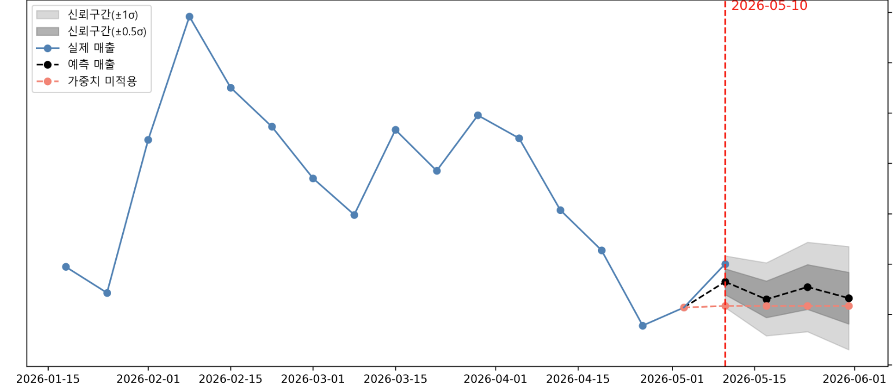
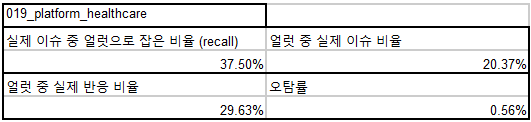

01 · SCALE
에이전트 팀 활용
- 에이전트 팀으로 기존 개발 이슈 120건의 정의·평가 수행
- 이 과정을 워크플로우로 구조화 — 이후 이슈 발생 시 에이전트가 자동으로 평가·적재
DATA
Python · SQL · Redshift
PIPELINE
Dagster · Bitbucket CI/CD
BI
Chart.js · D3.js · HTML/CSS
AI
Claude Code · Codex · GPT API
주차별 매출 증감 예측 정확도 — 2025 상반기 76% → 하반기 86%
배포 · 이벤트의 매출 영향도를 정량 평가할 기준이 없었음
주단위 매출 예측 + 4주 변화율 스코어링 + 알럿 파이프라인 구축
예측 정확도 76 → 86%, 매주 의사결정 트리거로 가동


이슈 영향 시간 -94.47% · 이슈간 평균 약 30시간 감소
크론탭 + 주피터 임시 운영 · 얼럿 신뢰도를 측정할 KPI 부재
Dagster + Bitbucket DevOps 인프라 + 얼럿 4지표 정량 평가 체계
이슈 영향 시간 -94.47% (평균 30시간 단축), 반기 평가·개선 사이클로 운영

앱 내 39개 AB Test · 3개 신규 슬롯 출시 의사결정에 기여
AB Test 채택 · 신규 슬롯 출시 결정 시 데이터가 흩어져 있었음
두 가지 운영 대시보드를 직접 설계·구축 — 핵심 KPI를 한 화면에
39개 AB Test 채택 · 3개 신규 슬롯 출시 의사결정에 기여
스케일 · 검증 · 도구 결합 · 학습


2026-04-06 ~ 04-07 — 1차 이슈 −4,473 · 2차 이슈 −10,727
예측 baseline 대비 실제 CCU의 이탈 구간을 시각화. 플랫폼 · 버전 축으로 이슈 원인 추적. 분석 산출물은 자기완결형 인터랙티브 HTML 리포트로 자산화.